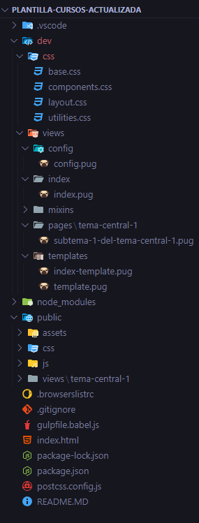
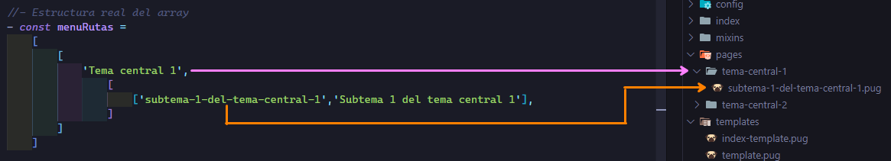
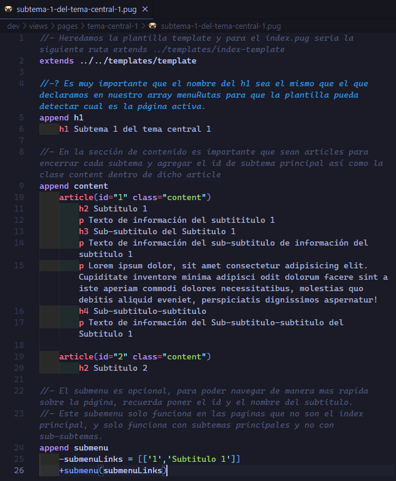
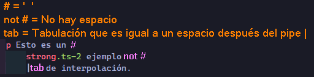
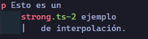
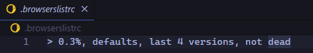
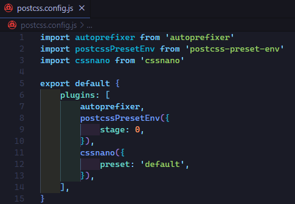
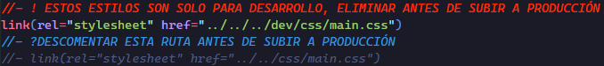

Una vez clonado el respositorio lo primero que debemos hacer es instalar las dependencias.
npm install
Modificar .gitignore
Es fundamental, tras clonar el proyecto, modificar el archivo .gitignore para asegurarte de que ciertos directorios y archivos no sean seguidos por Git, como por ejemplo evitar todos aquellos archivos que ya no son de producción tal como la carpeta dev que es la encargada de todo nuestro entorno de desarrollo.
Estructura

Estructura de nuestra plantilla.
gulpFile.babel
Este archivo es el más importante ya que sin el prácticamente no tenemos proyecto.
Task pug
Se encarga de automatizar tareas, en este archivo tenemos 2 tareas automatizadas, una llamada pug la cual es encarga de generar exactamente la misma estructura de la ruta ./dev/views/pages/**/*.pug en la carpeta destino que es gulp.dest('./public/views') esto se logra gracias a { base: './dev/views/pages'} Al agregar la opción base en el método .src(), Gulp conserva la estructura de directorios a partir de la ruta especificada. De este modo, si tienes archivos en subcarpetas dentro de dev/views/pages , esas subcarpetas se replicarán dentro de public/views.
Task indexPug
La segunda tarea es indexPug que se encarga de transformar nuestro index.pug que se encuentra en la ruta dev/views/index/index.pug a html dentro de la raiz de nuestro archivo.
Task prettify-html
Gulp-prettify es un plugin para Gulp que se utiliza para dar formato y mejorar la legibilidad de los archivos HTML. Este plugin permite ajustar la indentación, eliminar saltos de línea innecesarios y mantener intactos ciertos elementos, como <pre> y <code>. Es especialmente útil en proyectos donde se necesita limpiar o uniformar el código HTML generado automáticamente, como en aquellos que utilizan Pug u otros motores de plantillas.
Ejecutar
Como se explico en el readme.md una vez instalado las dependencias, solo basta con poner en nuestra consola gulp.
Entorno de desarrollo
Dentro de nuestra estructura de carpetas tenemos la carpeta dev que es la carpeta de desarrollo y dentro de esta carpeta tenemos la carpeta views donde encontraremos toda la configuración de nuestro sitio.
Carpeta templates
Dentro de esta carpeta encontramos las plantillas principales de nuestro sitio, hay que recordar que esta plantilla fue hecha especialmente para subirla a Github pages y es por eso que encontramos 2 plantillas:
Plantilla
Uso
index-template.pug
Esta plantilla es unicamente para cargarla en la carpeta index, sobre el archivo index.pug ya que hay que recordar que GitHub pages requiere un index en la raiz de nuestro sitio. Esta plantilla ya viene programada con las rutas de nuestro sitio empezando de la raiz hacia los demás archivos.
index-template.pug
Esta plantilla contiene lo mismo que index-template solo que viene programada con las rutas empezando de la carpeta actual hasta el archivo indicado. Esta plantilla se utiliza en todas las demás vistas que no es el index.pug
Carpeta config
En este archivo se declaran todas nuestras variables globales, arrays, objetos para que se puedan utilizar globalmente.
Aqui declaramos un array llamado menuRutas que contiene la siguiente estructura.
const menuRutas =
[
[
'Tema central 1',
[
['subtema-1-del-tema-central-1','Subtema 1 del tema central 1'],
// [....... más subtemas del tema central 1]
]
],
// [
// Agregamos todos los demas temas centrales
// ]
]
Este array es el encargado de contener la información de nuestro menu lateral izquierdo.
Para que la plantilla funcione correctamente es importante seguir el orden siguiente.
const menuRutas =
[
[
'Tema central 1', // Sera el nombre de nuestra carpeta pero con guiones
[
//1er elemento es el nombre de la dirección del archivo.pug
//2do elemento es el nombre que se visualizará en pantalla como link
/*Es muy importante que el primer elemento tenga el mismo nombre que
el segundo elemento solo que unido con guiones.*/
['subtema-1-del-tema-central-1','Subtema 1 del tema central 1'],
]
]
]
Así quedaria nuestra carpeta pages que es la encargada de contener todas nuestras paginas ordenadas por carpetas de cada tema.

Y como segundo arreglo tenemos -let submenuLinks = [] que es una matriz en realidad y está vacia por el momento, ya que está aquí para ser ocupada de manera global en cualquier pagina de nuestro sitio y que tendrá la siguiente estructura.
submenuLinks = [['id','Nombre del subtema']]
Esta matriz se encarga de estructurar los enlaces con sus id a cada subtema del tema central, ya que la plantilla cuenta con un submenu lateral derecho, para poder movernos mas fácilmente a través de la página.
Agregar contenido
Para agregar contenido tomaremos como ejemplo, el archivo subtema-1-del-tema-central-1.pug que se encuentra dentro de la carpeta tema-centra-1 este procedimiento es el mismo para todos los demás archivos, a exepción de un pequeño detalle que veremos a continuación.

Highlight words
strong.ts-1 Hello
strong.ts-2 Hello
strong.ts-3 Hello
strong.ts-4 Hello
strong.ts-5 Hello
strong.ts-6 Hello
Interpolando correctamente elementos
Cuando nosotros queremos poner elementos de línea dentro de un elemento bloque para no tener resultados inesperados debemos seguir las siguientes intrucciones, primero veamos nuestro ejemplo.

Código pug interpolado con explicación 
Código pug interpolado sin comentarios
RESULTADO:
Esto es un ejemplo de interpolación.
Muy importante siempre que interpolemos etiquetas de línea hay que recordar no agregar un espacio después de la ultima palabra y si utilizamos el pipe (|) es necesario indentar con tab para que se agregue un espacio.
Para una tabla utilizamos una tabla común en html, solo que ocupamos la sintaxis de pug.
Encabezado 1
Encabezado 2
Fila 1, Columna 1
Fila 1, Columna 2
Fila 2, Columna 1
Fila 2, Columna 2
Fila 3, Columna 1
Fila 3, Columna 2
Fila 4, Columna 1
Fila 4, Columna 2
Fragmento de código
Para poder utilizar fragmentos de código en la página, necesitamos utilizar la siguiente línea
div: pre: code.language-javascript
Para especificar el tipo de lenguaje a mostrar solo necesitamos cambiar la clase language-TipoDeLenguaje En nuestra plantilla solo tenemos disponibles los lenguajes de:
html css javascript typeScript react-jsx react-tsx json git bash
Entorno de producción CSS
Esta plantilla está utilizando postcss para el código css en producción, utilizando los plugins de autoprefixer, postcss-preset-env,cssnano
Y tambien hacemos uso de .browserslist
Postcss
PostCSS es una herramienta para transformar CSS usando plugins de JavaScript. Básicamente, PostCSS permite que tu CSS sea procesado por una serie de plugins que pueden realizar diversas tareas, como optimización, análisis, y añadidura de nuevas funcionalidades. A diferencia de preprocesadores como Sass o Less, PostCSS es más modular y flexible, ya que te permite usar solo los plugins que necesites.
Plugins postcss
Autoprefixer:
Agrega automáticamente los prefijos necesarios para que tu CSS sea compatible con diferentes navegadores. Por ejemplo, transforma propiedades como display: flex; en algo como -webkit-display: flex; para asegurarse de que funcione en versiones más antiguas de navegadores.
postcss-preset-env:
Este plugin te permite utilizar las futuras características de CSS hoy. Es como Babel para JavaScript, pero para CSS. Convierte las nuevas sintaxis CSS en un formato que los navegadores actuales puedan entender, basándose en la configuración de compatibilidad de navegadores.
cssnano:
Este plugin es un optimizador de CSS que reduce el tamaño de los archivos eliminando espacios en blanco, comentarios y otras cosas innecesarias, haciendo tu CSS más ligero y rápido de cargar.
¿Qué es .browserslistrc?
El archivo .browserslistrc es un archivo de configuración que se pone en la raiz del proyecto, especifica qué navegadores y versiones quieres soportar en tu proyecto. PostCSS y otros herramientas como Autoprefixer utilizan esta configuración para saber qué prefijos o transformaciones necesitan aplicar a tu CSS. Por ejemplo, puedes definir que tu CSS debe ser compatible con las dos últimas versiones de los navegadores más populares.

¿Qué es el archivo postcss.config.js?
El archivo postcss.config.js se pone en la raiz del proyecto, es donde defines la configuración de PostCSS, incluyendo qué plugins deseas utilizar y cómo deben comportarse. Aquí es donde puedes especificar, por ejemplo, que quieres usar Autoprefixer y cssnano, y cómo deben interactuar con tu CSS.

Preparando el entorno de CSS a producción
Cuando estemos agregando información a nuestro blog es necesario tener linkado los estilos en modo desarrollo.

Este es un ejemplo del archivo template.
Una vez que terminamos de agregar información y estemos listos para subir a producción es necesario cambiar las rutas del linkado de los estilos a modo de producción.
Pero antes es necesario haber preparados nuestros estilos a modo de producción.
Nuestra plantilla utiliza la dependencia de npm-run-all para ejecutar varios comandos en paralelo.
Veamos la configuración de nuestro script para ejecutar estos comandos en paralelo.
Ejecuta todos los scripts que comienzan con build:css: en paralelo. Esto significa que todos los archivos CSS especificados en los scripts se procesarán simultáneamente.